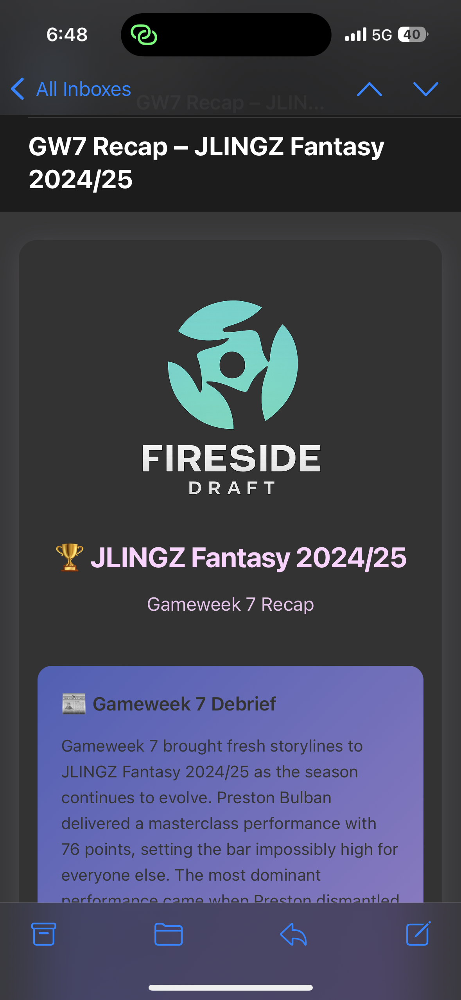
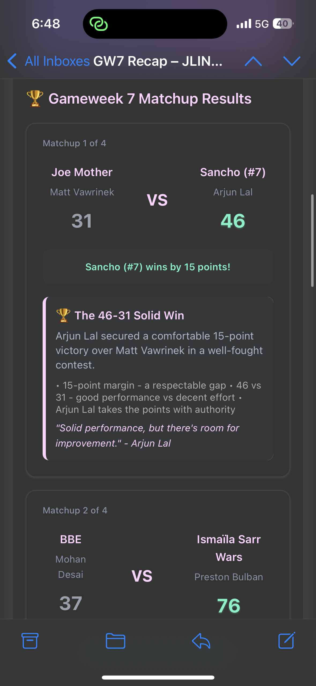
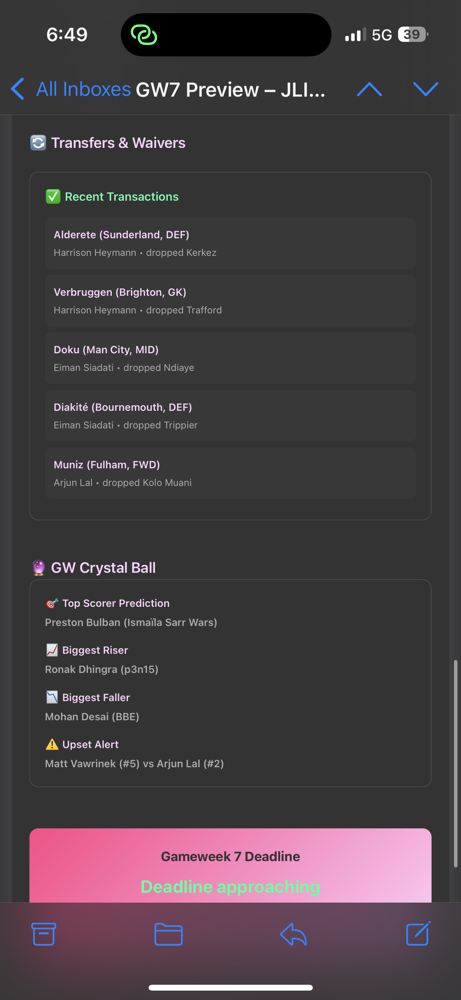

Fireside Draft is a fantasy sports platform that aims to increase league engagement through weekly newsletters. Before each weekend of games, we send newsletters summarizing key matchups, predictions, and other insights, followed by gameweek recaps enabled by the official FPL APIs.
Features
• Real-time trade info
• Manager statistics and analytics
• League standings and scoring
• Story-based gameweek recaps
Why Did I Build This?
For the last 5 years, my high school friend group has stayed connected through constant banter focused on our fantasy sports league. While FPL provides high-level stats on players and the premier league as a whole, there aren't any existing platforms that provide customized insights for the league you and your friends are involved in. With Fireside Draft, I wanted to create a fun, insightful, and low-touch platform that makes fantasy more entertaining on a weekly basis.
What Does It Do
Fireside Draft enables users to create custom fantasy league newsletters that track key stats throughout the season. The automated newsletter features weekly predictions, recent transactions/waivers, story-based recaps, and more.
What Does It Look Like



Obstacles Encountered
Auto-populating weekly newsletters with live league data was pretty challenging. Integrating with FPL APIs required a decent amount of research as there isn't any official documentation available online. Working with Cursor with only base-level coding experience meant learning through practice while building the platform.
Future Development
Planned features include scaling the platform while adding mobile accessibility, advanced analytics with more sophisticated prediction models, intra-platform engagement, and AI-powered draft recommendations.